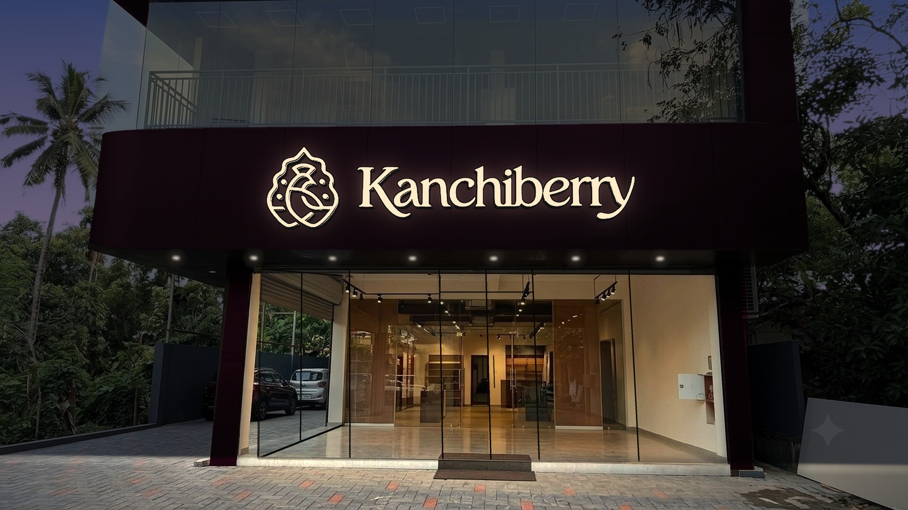
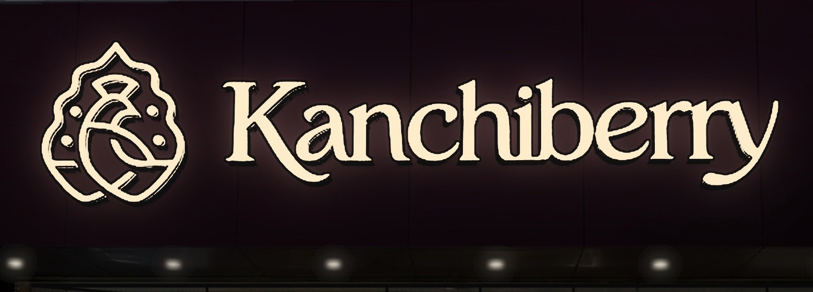
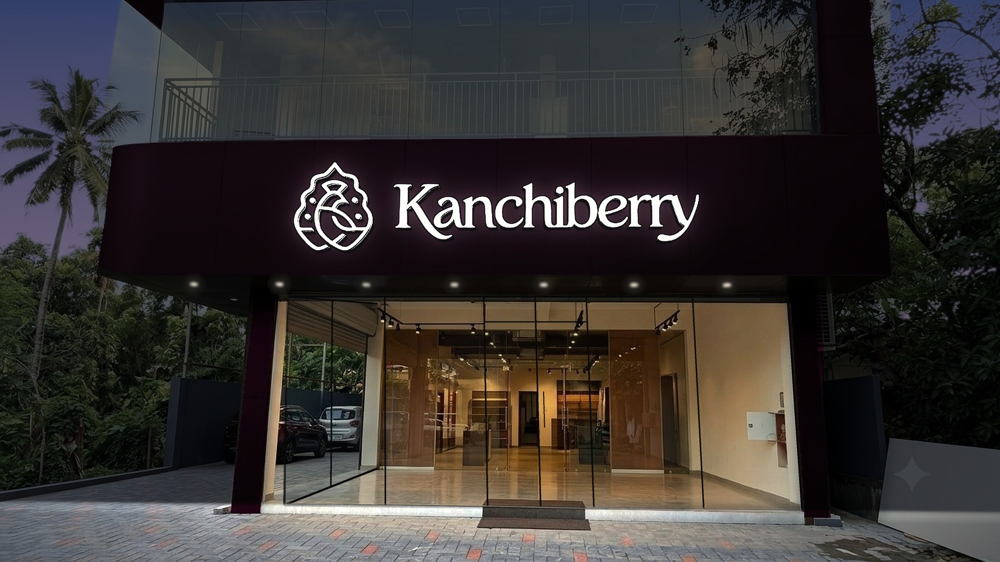

A rounded ACP fascia in deep wine (#35051F) with front-lit channel letters on black returns and a black-framed glass shopfront, shown in daylight and at dusk with neutral white or warm white faces. Every render is 4095 × 2304 px. Use “View full size” to inspect the detail.


Drag across the photo to compare the two letter colours. It follows the time of day selected above.

Warm whiteNeutral white